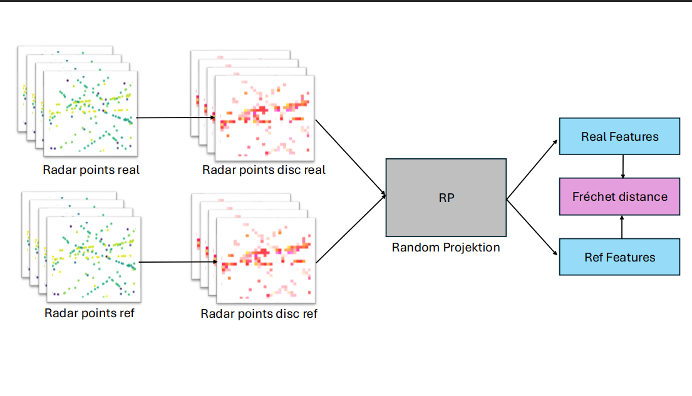
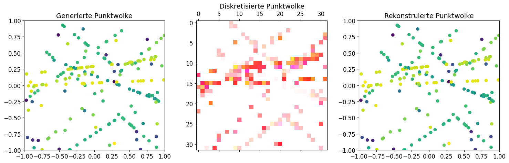
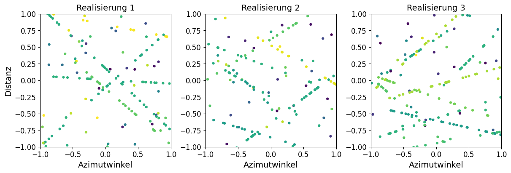
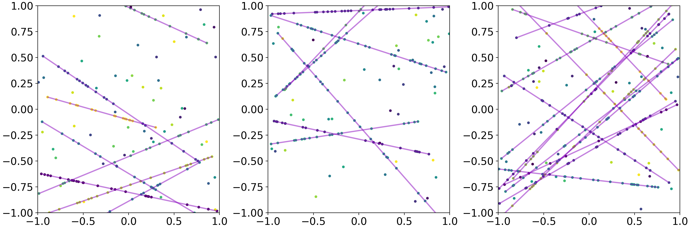
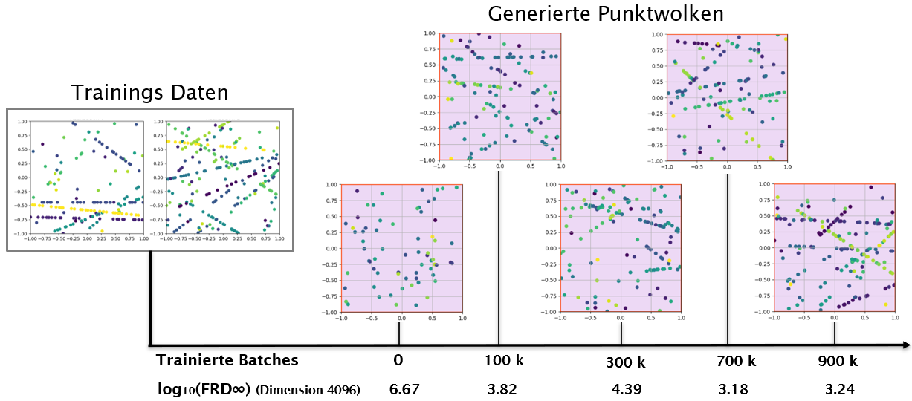
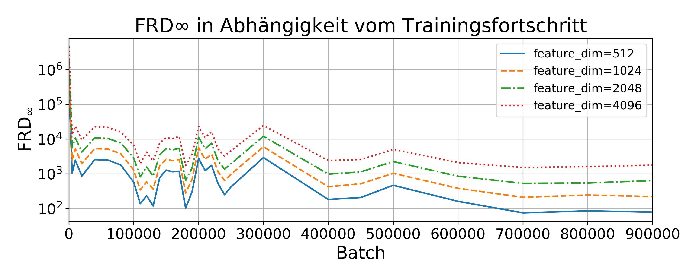

Abstract
Evaluating synthetic radar data is challenging because established metrics such as the Fréchet Inception Distance (FID) rely on domain-specific feature extractors and do not transfer cleanly to radar. This thesis presents and systematically evaluates the Fréchet Radar Distance (FRD), a FID-inspired metric that uses random projections as a feature extractor and therefore does not require a domain-trained network. FRD is validated in a controlled testbed built from parameterized pseudo-radar generators that allow targeted variations of statistical properties in radar point clouds. As a reference measure, an approximated log-likelihood is used to quantify similarity of the underlying distributions. Results show that FRD provides consistent, reproducible, and expectation-aligned assessments in these controlled scenarios and correlates with the approximated log-likelihood, making it suitable for capturing structural similarities between radar data distributions. Building on this validation, FRD is used to evaluate U-Net-based diffusion models for generating synthetic radar data. Under idealized training conditions, diffusion models can reproduce key characteristics of radar data, and increasing model capacity shows diminishing returns beyond a certain size.
Context
Generative models can create synthetic sensor data to improve coverage of rare or costly scenarios. However, for radar data, quality assessment is non-trivial: visual judgment is unreliable and image-centric metrics often do not apply. This thesis focuses on distribution-level evaluation for radar point clouds and on whether diffusion models can reproduce radar-specific structure.
Problem
Evaluating synthetic radar data is fundamentally challenging because radar point clouds differ substantially from natural images. Radar observations are typically sparse, noisy, and strongly influenced by physical measurement effects, which makes visual inspection unreliable as a quality indicator. Many commonly used generative model metrics, such as the Fréchet Inception Distance (FID), rely on feature representations extracted by domain-specific neural networks trained on large image datasets. These feature extractors capture semantic structure in images but do not transfer well to radar data, where the underlying structure and statistical properties are entirely different.
As a result, applying FID-style metrics to radar requires either designing a suitable feature representation or finding an alternative feature space that does not depend on a domain-trained network. However, even if such a metric is defined, an additional difficulty remains: it must be validated against a reliable reference measure. Without a controlled reference that reflects the true similarity between radar data distributions, it is difficult to determine whether the metric actually measures meaningful differences or merely reflects artifacts of the chosen representation.
In addition to the evaluation problem, it is also not yet fully clear whether modern generative approaches such as diffusion models are well suited for modeling radar data. Radar point clouds are characterized by sparsity, irregular spatial structure, and sensor-specific noise patterns that differ significantly from the dense image data for which diffusion models were originally designed. Although several recent works have demonstrated the potential of diffusion models for radar-related tasks, their evaluations are often limited to specific datasets or qualitative results and do not provide a structured analysis of distributional similarity. Consequently, it remains unclear how reliably such models reproduce the statistical properties of radar measurements and whether distribution-level metrics such as FRD can meaningfully capture the quality of generated radar data.
Sparse & noisy data
Radar point clouds differ strongly from natural image data.
Image metrics fail
FID relies on domain-trained feature extractors.
Metric validation
A controlled reference is required to verify metric behavior.
Contributions
This thesis investigates the suitability of the Fréchet Radar Distance (FRD) as a metric for evaluating synthetic radar data. The work focuses on validating the metric in controlled experimental settings and analyzing whether it reflects meaningful differences between radar data distributions. To achieve this, a parameterized pseudo-radar generator is used to create datasets with known distributional properties, allowing systematic testing of the metric's behavior. Furthermore, the study compares FRD with an approximated log-likelihood as a reference measure. Beyond the validation of the metric itself, the thesis additionally applies FRD to analyze the training behavior of U-Net-based diffusion models for synthetic radar generation. This provides a first structured investigation of how diffusion models reproduce radar data distributions and how model capacity influences the resulting data quality.
FRD validation
Empirical evaluation of FRD in controlled pseudo-radar experiments.
Reference metric
Comparison with approximated log-likelihood as an independent reference.
Model evaluation
Application of FRD to analyze diffusion models for radar generation.
Method
FRD calculation
High-level pipeline: radar point clouds → discretize clouds into grids → random projections → estimate mean/cov → compute Fréchet distance on mean/cov.

Discretizing Radar Point Clouds
The continuous spatial domain of the point clouds is divided into grid cells. Each radar point is assigned to a grid cell such that the total Euclidean distance between all points and their assigned cell centers is minimized. Since each cell can contain at most one point, the assignment problem becomes a linear sum assignment problem.
For occupied cells, the representation stores a presence indicator together with the relative offset of the radar point to the center of the assigned cell. By encoding this offset, the exact spatial position of the point can be reconstructed. Consequently, the discretization does not lose spatial information despite mapping the points onto a grid.

Random Projections
To obtain a feature space for comparing radar data distributions, the discretized grids are projected using random linear mappings. The use of random projections is motivated by results from compressed sensing and random projection theory, which show that random mappings approximately preserve geometric properties of high-dimensional data with high probability.
Fréchet Distance
For the projected features, the mean vector and covariance matrix are estimated for each dataset. The Fréchet Radar Distance (FRD) then measures the difference between two datasets by computing the Fréchet distance between the corresponding Gaussian distributions defined by these statistics.
Validation setup
High-level pipeline: two different pseudo-radar point clouds → compute FRD → compute reference metric → compare FRD and reference.
Pseudo Radar Points
To systematically evaluate the proposed metric, a parametric pseudo-radar generator is used to create synthetic radar point clouds with controllable statistical properties. The generator combines simple geometric primitives such as lines, rectangles, and circles with additional uniform clutter to simulate typical radar structures and noise patterns.

Reference Metric
To validate the behavior of the Fréchet Radar Distance, an approximated log-likelihood under the pseudo-radar generator is used as a reference metric. It provides a theoretical, sample-based measure for comparing the similarity between datasets generated by different parameter configurations.
The likelihood is computed from estimated generator parameters, including the number of detected lines, the number of points per line, and the number of clutter points. Since these quantities follow Poisson distributions in the generator model, the overall log-likelihood can be expressed as a sum of Poisson log-likelihood terms. A higher value indicates that the observed point cloud is more likely under the corresponding generator.
This likelihood evaluates structural count variables and does not model the exact spatial distribution of points within lines or clutter regions. Therefore, it serves as an approximate but useful reference measure for assessing whether FRD captures meaningful differences between radar data distributions.

Diffusion Model Training
U-Net-based diffusion models are trained on discretized radar grids generated from the pseudo-radar generator. During training, samples are generated at different stages and evaluated using FRD to track distributional convergence towards the reference radar distribution.
Results
FRD validation
The experiments show that the Fréchet Radar Distance behaves consistently in controlled pseudo-radar scenarios. When comparing datasets drawn from the same generator distribution, the FRD decreases with increasing sample size and approaches zero. When generator parameters are varied, the FRD increases systematically with the degree of distributional change and correlates with the approximated log-likelihood reference.
Diffusion Model Training
The generated samples during training illustrate how the diffusion model gradually learns the structure of the radar data distribution. Early training stages mainly produce noisy point clouds, while later stages increasingly reconstruct the characteristic sparse line structures produced by the pseudo-radar generator.

To quantify this improvement, the Fréchet Radar Distance (FRD) is computed for samples generated throughout training. The decreasing FRD indicates that the distribution of generated samples becomes progressively closer to the target radar data distribution.

Reproducibility
Minimal run guide, see GitHub README for more information.
git clone https://github.com/ZanderNic/FrechetRadar
cd FrechetRadar
python3 -m venv .venv
source .venv/bin/activate
pip install -e .
python3 ./experiments/main_model_training_FRD.py --config test.jsonCitation
@thesis{zander2026frd,
title = {Evaluation of Fr\'echet Radar Distance for Assessing Synthetic Radar Data},
author = {Zander, Nicolas},
year = {2026},
school = {OTH Regensburg}
}Acknowledgements
This work was carried out as part of my dual study program and within the scope of my Bachelor's thesis in cooperation with AUMOVIO Germany GmbH. The research builds upon earlier work conducted in the context of the nxtAIM project by Jörg Reichardt and Jonas Neuhofer, whose prior implementation and conceptual contributions provided an important foundation for this repository and the thesis.
I would especially like to thank Dr. Jörg Reichardt for supervising this thesis and for his continuous guidance, technical insights, and valuable feedback throughout the project.